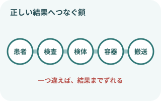
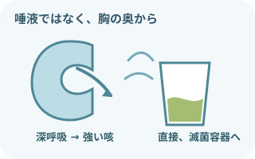
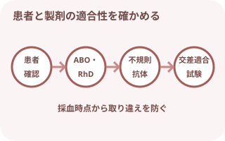
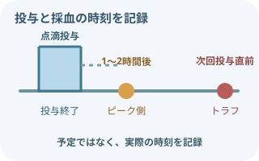
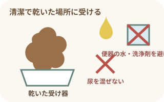
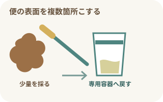
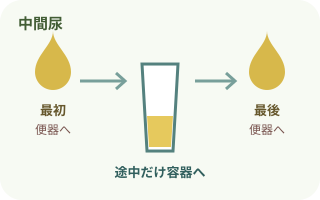
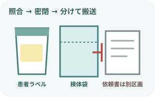
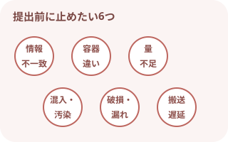

最初に押さえる注意事項
結果は「採る前」から変わる
- 氏名だけでなく、患者IDや生年月日など複数の識別情報で本人を確認する。
- 検査項目、検体の種類、採取部位、容器、必要量、採取条件を指示と照合する。
- 食事、薬剤、抗菌薬、点滴、安静、月経、排泄時刻など、結果へ影響する条件を確認する。
- 検体はすべて感染性があり得るものとして扱い、曝露リスクに合う個人防護具を選ぶ。
採った後も検査の一部
- 患者のそばで容器と本人を再照合し、必要事項を表示する。
- 漏れないよう密閉。検体袋へ入れ、依頼書は検体に直接触れない区画へ分ける。
- 必要な温度・遮光・時間を確認し、速やかに提出する。
- 不一致、容器違い、汚染、漏れ、量不足があれば、隠さず検査部門へ相談する。
検体検査とは
血液、尿、便、喀痰、体液、組織など、体から採取・排出されたものを調べる検査。診断、治療方針、経過観察、感染症の原因検索などに用いる。

正しい結果へつなぐ5つ
- 患者：誰の検体か
- 検査：何を調べるか
- 検体：どこから、いつ採るか
- 容器：何に、どれだけ入れるか
- 搬送：何℃で、いつまでに届けるか
分析装置が正確でも、採取から搬送までの過程が不適切なら、患者の状態を正しく反映しない結果になり得る。
必要物品
- 検査に合う採取容器・保存容器
- 患者ラベル、検査依頼情報、筆記用具
- 手袋、手指衛生用品
- 必要時：マスク、眼の防護具、ガウン・エプロン
- 清潔な採尿・採便補助容器、ぬぐい用スワブ
- 密閉できる検体袋、搬送容器
- 必要時：冷却材、遮光袋、タイマー
「滅菌容器」か「清潔容器」か、保存液・輸送培地が必要かを検査ごとに確認する。キャップの色だけで決めない。
喀痰培養

必要なのは唾液ではなく喀痰
- 可能なら採取前に水で含嗽する。マウスウォッシュは避ける
- 深呼吸後、胸の奥から強く咳をする
- 出た喀痰を直接、広口の滅菌容器へ入れる
- 色、粘稠度、血液混入、量を観察する
- 唾液だけ、食物残渣が多い場合は提出前に相談する
| 採取方法 | 容器・器具 | 確認ポイント |
|---|---|---|
| 自己喀出 | 検査室指定の広口・滅菌・漏れ防止容器 | 唾液ではなく、深い咳で出た下気道由来の喀痰を直接入れる。 |
| 気管吸引 | 指定の滅菌吸引採取器・喀痰トラップ | 吸引カテーテルと採取器の接続、無菌操作、採取部位を確認する。 |
咳による飛沫・体液曝露を見込んで防護具を選ぶ。結核など空気感染が疑われる場合や誘発喀痰では、採取場所・換気・呼吸用防護具を含む専用手順に従う。
輸血前血液検査

何を確かめる検査か
- ABO・RhD血液型：患者の血液型を確認する
- 不規則抗体検査：ABO以外の臨床的に重要な赤血球抗体を調べる
- 交差適合試験：患者血液と赤血球製剤の適合性を確認する
- 採血前に患者、検査指示、必要な採血管、本数を照合する。
- 輸血歴、妊娠歴、既往抗体、過去の副反応を確認し、必要情報を共有する。
- 採血後、患者のそばで容器と本人を再照合し、採取日時を表示する。
- 血液型確認を別時点の検体で行う運用や、検体の有効期間は院内手順に従う。
- 緊急輸血では通常と異なる手順がある。採血のために救命処置を遅らせない。
バンコマイシン血中濃度測定

濃度だけでなく時刻を測る
- TDM：血中濃度と患者情報から、有効で安全な投与を検討する
- ピーク側：2点採血では、投与終了1～2時間後が推奨例
- トラフ：次回投与の直前に採る
- AUC：投与後24時間の曝露量を推定して評価する
採血前にそろえる情報
- 投与量、投与開始・終了時刻、投与間隔
- 採血した正確な日時と、採血が投与の何回目か
- 直近の血清クレアチニン、腎機能・尿量の変化
- 透析・持続的腎代替療法、体重、重症度など投与設計へ影響する情報
- 採血時刻がずれた場合は、予定時刻へ書き換えず実際の時刻を報告する。
- バンコマイシンを投与しているラインからの採血は、薬剤混入で高値になるおそれがある。別ルートを基本とし、困難な場合は院内手順へ従う。
- AUC評価は1点でも行える場合があるが、精度を高めるため2点採血が推奨される。採血点は医師・薬剤師・検査部門の指示で決める。
- AUC/MIC 400～600は、MIC 1 mg/Lを仮定した代表的な目標。数値だけで自己判断して投与量を変更しない。
便培養

便器の水へ落とす前に受ける
- できれば先に排尿する
- 清潔で乾いた容器や採便シートで便を受ける
- 尿、便器の水、洗浄剤を混ぜない
- 指示量を採取。血液、粘液、水様部分があれば目的に応じて含める
- 蓋を確実に閉め、外側の汚染を確認する
- 可能なら抗菌薬開始前に採取する。すでに使用中なら薬剤名と開始時期を共有する。
- 検査室指定の清潔または滅菌された漏れ防止容器へ入れる。
- 便のどの部分をどれだけ採るか、輸送培地が必要かを採取基準で確認する。
- 採取後は速やかに提出。保存温度と搬送期限は対象微生物・検査法で異なる。
便潜血

専用スティックで便の表面を採る
- 便を便器の水へ落とす前に受ける
- 専用スティックで便表面の複数箇所をこする
- スティックを専用容器へ戻し、確実に閉める
- 採取日を記録し、キット指定の温度・期限を守る
- 大腸がん検診では、免疫便潜血検査2日法が用いられる。2日分は別の日に採る。
- 採取量、初回から2回目までの日数、保存方法はキットの説明に従う。
- 採取後は冷蔵保存が望ましく、2回目採取後の速やかな回収が原則とされる。
- 陽性は「がん確定」ではないが、陰性にするための再検査で済ませず、指示された精密検査へつなぐ。
追加して押さえる：尿検体

中間尿は最初と最後を入れない
- 手指衛生。清潔を保てるよう説明する
- 排尿の初めは便器へ流す
- 途中の尿を容器へ採る
- 残りは便器へ流す
- 容器の内側や蓋の内側に触れず密閉する
- 随時尿
- 採取時刻を問わず採る。採取時刻、食事、薬剤などの条件を記録する。
- 早朝尿
- 起床後の尿。濃縮されやすいが、目的と指示を確認する。
- 中間尿
- 尿培養などで外陰部・尿道周囲からの混入を減らす採り方。
- 蓄尿
- 開始時の尿は捨てて時刻を記録。その後の尿を集め、終了時刻の尿まで入れる。取りこぼしたら自己判断で続けず報告する。
ぬぐい液・その他の検体
- 咽頭・鼻腔ぬぐい：検査に指定された部位、深さ、回数、スワブ、輸送培地を確認する。目的部位以外へ触れた場合は相談する。
- 創部・膿：表面の汚染を避け、どの部位・深さから採取したかを明記する。嫌気性菌検査などは専用容器が必要。
- 髄液・胸水・腹水など：採取介助、容器の順番、緊急搬送が必要な場合がある。外観・量・採取時刻を確認する。
- 病理組織・細胞診：固定液の種類と量、未固定で出す検体、乾燥を避ける検体を混同しない。
採取から提出までの基本手順
- 指示と採取条件を確認
検査項目、検体、部位、時刻、容器、量、保存・搬送条件を確認。
- 患者を確認し説明
複数の識別情報で本人確認。目的、採り方、苦痛、協力してほしいことを説明。
- 物品と環境を準備
プライバシーと安全を確保。曝露リスクに合う防護具を選ぶ。
- 正しい方法で採取
検査部位を汚染させず、必要量を採る。患者の苦痛と状態を観察。
- 密閉し、患者のそばで照合
容器を閉め、患者・検体・ラベル・依頼情報を一患者ずつ確認。
- 袋へ収め、外側を確認
漏れや外面汚染がないか確認。依頼書を検体と分けて収納。
- 条件を守って提出・記録
温度、遮光、向き、期限を守って搬送。採取時刻、部位、性状、問題を記録・報告。

提出前の最終確認
- 患者情報と依頼情報が一致
- 検体名・採取部位・採取日時が明確
- 容器が密閉され、外側が汚れていない
- 必要量があり、保存条件を守っている
- 検体数と依頼数が一致
再採取になりやすい原因

検査へ進めない6つの例
- 患者情報の欠落・不一致
- 検体や容器の種類が違う
- 必要量に足りない
- 他の分泌物、水、消毒薬などが混入
- 容器の破損・漏れ・外面汚染
- 温度・遮光・搬送時間が不適切
受け入れ可否は検査項目と施設基準で決まる。貴重で再採取が困難な検体もあるため、自己判断で廃棄・移し替えをせず、検査部門へ連絡する。
観察・報告・記録
- 採取日時、採取者、検体の種類、採取部位・方法
- 検体の量、色、混濁、臭い、粘稠度、血液・粘液などの性状
- 食事、薬剤、抗菌薬、月経、蓄尿の開始・終了などの検査条件
- 採取時の患者状態、疼痛、出血、咳込み、気分不良など
- 取りこぼし、汚染、量不足、搬送遅延など、結果解釈へ影響する出来事
- 提出時刻、提出先、連絡した内容と対応
出典
- 厚生労働省「検体検査について」
- World Health Organization, Collection and preservation / Transportation of samples
- CDC, Standard Precautions for All Patient Care
- CDC, CAUTI Guideline: Specimen Collection
- Gloucestershire Hospitals NHS Foundation Trust, Sputum culture
- 日本赤十字社「交差適合試験」
- 日本化学療法学会・日本TDM学会「抗菌薬TDM臨床実践ガイドライン2022」
- 日本化学療法学会「バンコマイシンTDMソフトウェア PATを使用するにあたって」
- 厚生労働省「がん予防重点健康教育及びがん検診実施のための指針」大腸がん検診
- 国立がん研究センター がん情報サービス「大腸がん検診について」
- NHS, How to collect a sample of poo
- Cambridge University Hospitals, How to collect a 24 hour urine sample